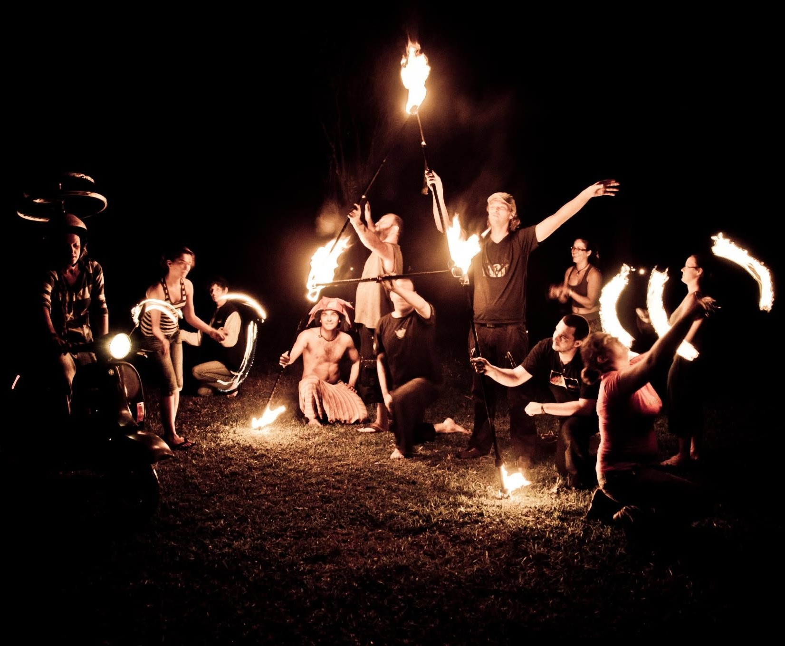
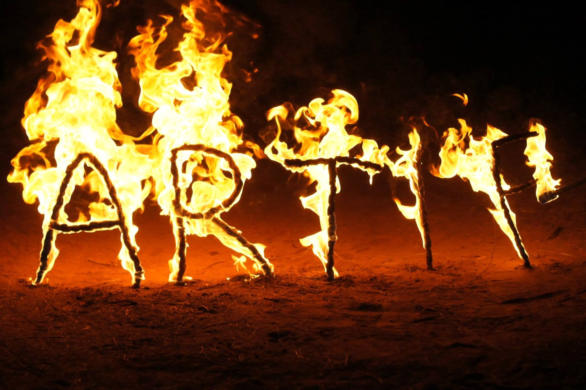
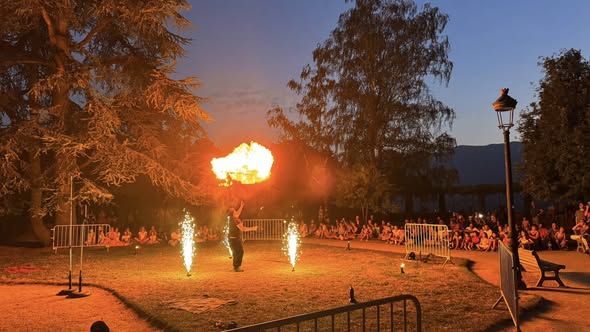

Mon parcours
Mon parcours dans les arts du feu a commencé par une simple curiosité et s’est progressivement transformé en une véritable passion, puis en une activité artistique à part entière.
De mes premiers entraînements à Montpellier jusqu’à mes projets actuels avec La Tribe, en passant par huit années d’aventure avec l’association Artiflam en Nouvelle-Calédonie, chaque étape m’a permis de développer ma pratique, d’explorer de nouveaux agrès et surtout de rencontrer les personnes avec lesquelles j’ai partagé cette passion.
Les débuts à Montpellier
C’est en 2009, à Montpellier, que je découvre le jonglage de feu. À l’époque, je rencontre l’association Festiflam et je suis rapidement intrigué par cette pratique, et plus particulièrement par le bâton de feu (staff).
Je commence alors à m’entraîner par mes propres moyens, avec les moyens du bord : mon premier « bâton » n’est autre qu’un simple balai dans mon studio !
Petit à petit, cette curiosité se transforme en véritable passion. Je découvre le plaisir de chercher de nouveaux mouvements, de comprendre les possibilités offertes par l’agrès et de progresser simplement en pratiquant.
L’aventure Artiflam
À la fin de mes études, je pars en Nouvelle-Calédonie. J’y rencontre d’autres passionnés de jonglage de feu avec lesquels je partage rapidement bien plus que des entraînements.
Nous fondons ensemble l’association Artiflam. Pendant près de huit ans, Artiflam devient une véritable aventure humaine et artistique.
Nous réalisons de nombreuses prestations, des démonstrations privées aux spectacles chorégraphiés de plus grande ampleur, notamment pour des festivals, des événements publics ou des anniversaires d’entreprises.
Ces années sont aussi l’occasion de développer considérablement ma pratique. D’abord principalement adepte du bâton de feu, je découvre progressivement de nombreux autres agrès : bolas, massues, épées, chaînes…
Toujours curieux d’apprendre, je cherche également à développer de nouvelles techniques et à créer des effets visuels originaux.

Créer un univers autour du feu
Avec Artiflam, je peux aussi donner vie à un univers plus personnel en créant des spectacles mêlant théâtre, ombres chinoises, musique, combat et jonglage de feu.
Des récits fantastiques prennent alors forme autour du feu, avec des personnages, des décors et des mises en scène imaginés spécialement pour les spectacles.
Au-delà du jonglage, cette période m’a permis d’explorer une autre dimension des arts du feu : raconter une histoire et créer un véritable univers visuel autour des flammes.
« J’ai tout un univers dans ma tête et grâce à Artiflam, j’ai pu le faire vivre quelques instants. »

De retour en Savoie
Fin 2018, je rentre en France et m’installe en Savoie.
Fort de plusieurs années de pratique et d’une maîtrise de nombreux agrès, je décide progressivement de me lancer en solo.
En parallèle de mon activité professionnelle en bureau d’études, je développe mon activité de jongleur de feu en tant qu’auto-entrepreneur.
Je conçois et propose aujourd’hui des spectacles et prestations adaptés à différents types d’événements, avec l’envie de mettre le feu au service de chaque projet.

La rencontre avec La Tribe
En 2026, je rencontre Théo Mandalas, fondateur de La Tribe, un collectif d’artistes indépendants.
Le courant passe immédiatement et de nombreuses nouvelles idées commencent à émerger. Cette rencontre ouvre aujourd’hui une nouvelle étape dans mon parcours, avec plusieurs projets en cours de développement.
Parmi eux, Tribe School, autour de la transmission du jonglage
et de l’apprentissage des agrès, et Tribe Forge, consacré à la
création de matériel et d’agrès.
Une nouvelle aventure commence donc, toujours autour de la même envie : pratiquer, créer, transmettre et continuer à explorer les possibilités offertes par le jonglage et les arts du feu.

Découvrir mes spectacles de feu
Découvrez les spectacles nés de ce parcours et les univers que je crée aujourd’hui pour vos événements.
Voir les spectacles